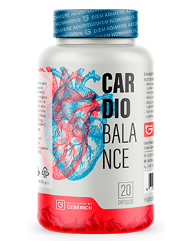

Cardio Balance — RIPORTA LA PRESSIONE A LIVELLI NORMALI IN 1 CICLO!
Il nuovo rimedio "Cardio Balance" libera dall'ipertensione, ripulisce le vene, protegge il cuore e riduce il rischio di ictus

Come funziona Cardio Balance:
- L'estratto di foglie di biancospino pulisce le vene da scorie e colesterolo
- L'estratto di ribes nero rimuove lo spasmo dei vasi causato dallo stress
- L'acido folico riduce il rischio di infarto e ictus
- L'estratto di mirtillo rosso protegge il cuore dagli sforzi
- Il risultato è una normalizzazione della pressione in 4-5 settimane
L'offerta è valida solo per poco
Vecchio prezzo:
78 euroNuovo prezzo:
39 euro *